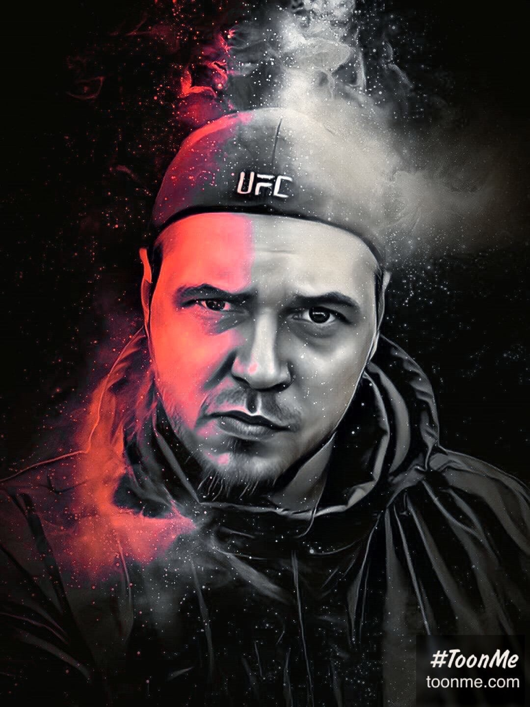

I build system-level tools for Windows — the ones that dig into APIs nobody documents, solve problems that "should just work", and don't ask you to click through six settings screens to do one simple thing.

Most software is a wrapper around a wrapper around a bad API decision from 2009. I don't do that. I go directly to the system — COM interfaces, undocumented Windows internals, vtable probing when the documentation doesn't exist.
I build things that shouldn't need to exist — because Windows should do it natively, but doesn't. Every product starts with a real problem someone is hitting daily, not a feature list someone thought would be cool.
The architecture is always the same: a lean C++ core that owns the system layer, a thin bridge to whatever UI the platform needs, and zero Electron.
IPolicyConfigVista via vtable probing (undocumented COM interface Microsoft
won't acknowledge). One hotkey, all devices move. Games auto-switch on launch,
auto-restore on exit. The kind of thing Windows should have shipped with in 2009.
No cargo-culting. Every tool earns its place.
If something on Windows is broken and it shouldn't be — that's my kind of project. Custom system tools, Windows internals, anything that requires going below the surface.